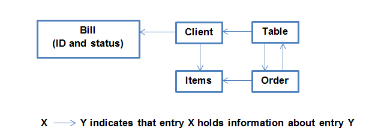

Restaurant Management System Team
1. Project Team Members
Jonathan Bouchard - 260429199
Nadine Hariri - 260282307
Payom Meshgin - 260431193
Tiberiu Popa - 260414246
Sasithra Thanabalan - 260360593
Yi Qing Xiao - 260429342
Neil Edelman - 110121860
2. Project Idea: Restaurant Management System
The restaurant management system will involve developing a GUI for users (i.e. wait staff, system administrator, and cook staff) and enable communication between these users via a back-end database. The system will manage employee information, menu items, and table information, as well as allow the user to create and update table orders and payment information. We will be using PHP and MySQL to drive the web application.
3. Project Plan
1) Setup project repository
2) Create database
3) Application
4) Implement User Interface
4. Actors
4.1 User:
An all-encompassing term used to designate the wait staff, the cook staff, and the managers
4.2 Wait Staff:
This user (staff member) does the following:
- Takes orders from the customers
- Inputs the orders into the system
- Update the orders’ status in the case of cancellation or delivery of the orders
- Manages table assignment and billing procedures using the system
4.3 Cook Staff:
This user (staff member) does the following:
- Prepare the order
- Update the status of the order
- Pass on the order to the waiter staff
4.4 Manager:
This user can do the following:
- Can view the flow of all the orders
- View the status of the personnel list
- Control/change the personnel list
4.5 System Administrator:
Person with total read and write access to the database. Can directly interact with the database using custom SQL commands.
5. Requirements
5.1 Functional Requirements
This system must perform the following:
- Create and manage table assignment and order placement
- Ensure clear interaction between all users of the system (wait staff, kitchen staff, manager, administrators)
- Users to be able to access and modify their respective accounts easily
- Keep comprehensive records of all staff in the restaurant
- Easily make updates and changes to the system via administrator user
- Functional Tests
- Failure Modes Tests
5.2 Non - Functional Requirements
The following outline the design and quality requirements of this system:
- Adding an order should have the waiter fill an open-ended text box depicting the user’s personal preferences
- Any order placed should be present in the database within 5 seconds
- Updating an order should change the information in the database within 5 seconds
- Interface should be user-friendly, such that a person with minimal experience can complete an order easily, therefore there must not be more than 10 text boxes to describe an Order
6. Database
The following is a general idea of how our database will interact:

7. User Stories
User Account Tasks
- Log In
- Log out
- Change Password
- Check In
- Check Out
- View user information
- Update User Information
Restaurant Operational Tasks
Table
- View Tables
- Edit Table
- Empty Table
Orders
- View Orders
- Place Order
- Update Order
Billing
- Generate Bill(s)
- View Menu Items
Managerial Tasks
- Create Table
- Add User
- Update Menu Items
View Statistics
View Revenues
View Most Popular Items
View Most Productive Employees?
6. User Stories
Story 1 |
|
Title: | User and System Administrator log in |
Story: | User and System Administrator want to log in. As a user, it is required that he can log into the system so that he can access the resources provided by the application. |
Normal Flow | - User is currently logged out of the system and wants to log in
- User accesses the application website using his mobile device
- User enters the correct username and password
- System validates information and grants access to user’s instance.
|
Alternative Flow | N/A |
Error Flow | - User is currently logged out of the system and wants to log in
- User accesses the application website using his mobile device
- The employee enters the wrong password or username into the system.
- The user is then prompted to re-enter their information.
|
Story 2 |
|
Title: | User and System Administrator log out |
Story: | User and System Administrator want to log out. As an user, it is required that he can logout from his instance of the application to end the session. |
Normal Flow | - User currently logged onto the system
- User chooses the logout option
- The system ends this session instance.
- Login screen appears for future log on
|
Alternative Flow | - User currently logged onto the system
- User has remained idle for 30 minutes or more.
- System automatically ends this session instance.
- User is now logged out
|
Error Flow | - Connection failed during session.
- The system forced the logout of the session’s instance.
|
Story 3 |
|
Title: | User changes their password |
Story: | User and System Administrator wants to change his/her password. The user needs to first log into a session and pick the change password option, confirm his/her old password and input a new password. |
Normal Flow | - User is currently logged into his/her instance of the session.
- User chooses the change password option.
- System prompts user original password and new password.
- User inputs his/her old password and a new password.
- System checks the validity of the new password, validates it, and updates the new password.
- System print a message indicating successful change of password and return to original session’s state.
|
Alternative Flow | - User is currently logged out of the system and wants to log in
- User accesses the application website using his mobile device
- User does not remember his/her password and requests a new password to be sent to his/her email address
- System prompts user to enter the correct answer to a security question decided by the user at the creation of the account.
- User enters the correct answer.
- System prompts user’s new password
- User inputs his/her new password.
- System checks the validity of the new password, validates it, and updates the new password.
- System print a message indicating successful change of password and return to login page.
|
Error Flow | - User is currently logged into his/her instance of the session.
- User choose the change password option.
- System prompts user original password and new password.
- User inputs his/her old password and a new password.
- System checks the validity of the new password, detects invalid patterns (ex. password included invalid characters), prompts user to retry.
|
Story 4 |
|
Title: | User Checks in |
Story: | The user checks in to allow the system to count when their shift has begun. The number of hours calculated by the system will determine user pay. |
Normal Flow | - User is logged in and wants to check in.
- User clicks on the check in tab.
- The system registers his checked in status and begins calculating work hours until check out.
|
Alternative Flow | N/A |
Error Flow | - User is logged in and forgets to check in.
- User may ask manager to manually input hours worked for that day.
|
Story 5 |
|
Title: | User Checks out |
Story: | The user checks out of the system to determine when their shift has ended The number of hours calculated by the system will determine user pay. |
Normal Flow | - User is logged in and wants to check out.
- User clicks on the check out tab.
- The system registers his checked out status and performs calculation of work hours.
|
Alternative Flow | N/A |
Error Flow | - User is logged in and forgets to check out.
- User may ask manager to manually input hours worked for that day.
|
Story 6 |
|
Title: | Manager creates a table |
Story: | The manager would like to add another table in the restaurant that can be occupied by clients. The manager should be able to create a new table in the system that can later be used by the wait staff. |
Normal Flow | - The manager is logged on and would like to add a table to the restaurant management system.
- The manager navigates to the Tables Menu and clicks on the Create Table tab.
- The manager assigns a maximum number of seats to the table and a unique table number.
- By clicking on Submit, the database is updated with the new table entry. Once the table is in the system, it can now be used by the wait staff.
- The system navigates back to the Tables Menu.
|
Alternative Flow | N/A |
Error Flow | - The manager is logged on and would like to add a table to the restaurant management system.
- The manager navigates to the Tables Menu and clicks on the Create Table tab.
- The manager assigns a maximum number of seats to the table and a table number. There exists a table in the system with that table number causing an error.
- The system generates an error and prompts the user to select another table number.
- Once the user chooses a valid table number, by clicking on Submit, the database is updated with the new table entry. Once the table is in the system, it can now be used by the wait staff.
- The system navigates back to the Tables Menu.
|
Story 7 |
|
Title: | User edits table information |
Story: | A user would like to modify a specific table’s information. Table information includes status and current number of customers. |
Normal Flow | - While logged into his/her session instance, the user chooses to set a table as occupied since customers have been seated at that table
- User selects the table of interest among the existing tables listed and and sets the status field to occupied.
- User inputs amount of customers and assigns a number to each customer of the table.
- When the submit button is pressed the database is updated with the new information
- The system navigates back to the Tables Menu.
|
Alternative Flow | - While logged into his/her session instance, the managed chooses to modify the tables maximum capacity
- User selects the table of interest among the existing tables listed and changes the capacity to the desired size
- When the submit button is pressed the database is updated with the new information
- The system navigates back to the Tables Menu.
|
Error Flow | - While logged into his/her session instance, the user chooses to set a table as occupied since customers have been seated at that table.
- The User selects the table of interest among the existing tables listed and and sets the status field to occupied.
- User forgets to input an amount of customers and to assign a number to each customer of the table.
- When the submit button is pressed, an error occurs and the user is prompted to enter an amount of customers and to assign a number to each customer at the table.
- The system navigates back to the Tables Menu
|
Story 8 |
|
Title: | User checks out a table (empty up a table) |
Story: | A user would like to remove a specific table’s information. Table information includes status and current number of customers. Most likely due to completion of order. |
Normal Flow | - While logged into his/her session instance, the user chooses to set a table as free or unoccupied since customers have completed their order and paid their bill..
- User selects the table of interest from the list of existing tables and verifies that the bill entry of this order has been set to paid.
- User selects the table of interest among the existing tables listed and and sets the status field to empty or available.
- When the submit button is pressed the database is updated with the new information
- The system navigates back to the Tables Menu.
|
Alternate Flow | N/A |
Error Flow | - Whie logged into his/her session instance, the user chooses to set a table as empty or available since customers wish to leave.
- The User selects the table of interest from the list of existing tables and sets the status field to empty or available.
- When the submit button is pressed, an error occurs and the user is alerted that the status of the bill entry of the order of said table is still set to unpaid.
- The User selects the table of interest among the existing tables listed and and checks the status of the bill entry or the order of this table.
- User sees the status of the bill entry of this order is still set to unpaid.
- If the User is a wait staff, the user issues the bill to the customer and updates the status of the bill entry to paid.
- The system navigates back to the Tables Menu.
- The User selects the table of interest from the list of existing tables and sets the status field to empty or available.
- The system navigates back to the Tables Menu.
|
Story 9 |
|
Title: | User views table |
Story: | User would like to view the status of tables in the restaurant. This could be because a manager wishes to seat more clients and is looking for empty tables or the wait staff wish to confirm the status of already occupied tables or if any user wishes to generally check the status of all tables in the restaurant, among other reasons. |
Normal Flow | - The user is logged on and would like to check the status of a table in the restaurant management system.
- The manager navigates to the Tables Menu and clicks on the View Table tab.
- The user can then view the table of entries of each table in the restaurant.
- The user clicks cancel when they are done inspecting the list.
- The system navigates back to the Tables Menu.
|
Alternative Flow | N/A |
Error Flow | N/A
|
Story 10 |
|
Title: | Wait staff employee creates the customer’s order |
Story: | A user would like to input an Order from the customers of a Table in the system. |
Normal Flow | - While logged in, the user wants to input a new order.
- User navigates to the Orders Menu tab. He then navigates to the Place Order tab.
- The user will then be presented with a form that will give him options to assign tables and clients to specific menu items.
- When the user clicks on the submit button, the new order will be saved into the database.
- System confirms the order, sets the default starting state to all menu items of the order, and adds the orders to the overall list of orders.
|
Alternate Flow | N/A |
Error Flow | - While logged in, the user wants to input a new order.
- User navigates to the Orders Menu tab. He then navigates to the Place Order tab.
- When presented with the order form, the user inputs orders for a table or clients which already have orders in progress under their name.
- System prints an error message and returns to the Place Order tab.
|
Story 11 |
|
Title: | User updates a Table’s Order |
Story: | A user would like to update an order to reflect that it has been completed in the kitchen or that it has been canceled by the customer. |
Normal Flow | - While logged in, the user would like to update the order.
- User navigates to the Orders Menu tab. He then navigates to the Place Order tab. The user can then choose which order he would like to modify
- The user will then be presented with a form that will give him the option to modify any field of the original order form.
- When the user clicks on the submit button, the new state of the order will be saved into the database.
- System confirms the change, and updates the order in the database.
|
Alternate Flow | - Cook staff member is logged on and clicks on the View Orders tab.
- Cook staff member sees that one of the orders has been set to the “Ready” status which identifies it as being ready to be cooked
- Cook staff realizes that there are no more ingredient to complete the order and will be forced to cancel it and set its status to “Unavailable”. The wait staff is notified.
- Cook staff stops processing this order and returns to the View Orders page
|
Error Flow | N/A |
Story 12 |
|
Title | Generate Bill(s) |
Story | After the customers at a particular table have completed making their order and are ready to pay, the wait staff generates a bill (or bills) |
Normal Flow | - While logged in, the wait staff wants to generate a bill for a particular customer.
- The wait staff navigates to the Create Bill form on the main menu of the application
- The wait staff is presented with a list of all tables for which there are unbilled orders
- The wait staff selects the table that the bill will be associated to
- The wait staff is shown the list of clients who have yet to be billed at the table.
- The wait staff selects the client whose order will be billed.
- The wait staff submits the form, which updates the database by generating generate the client's bill.
|
Alternative Flow 1: | - While logged in, the wait staff wants to generate a bill for all customers at a table.
- The wait staff navigates to the Create Bill form on the main menu of the application
- The wait staff is presented with a list of all tables for which there are unbilled orders
- The wait staff selects the table that the bill will be associated to
- The wait staff is shown the list of clients who have yet to be billed at the table.
- The wait staff selects the Select All option to select all the customers at the table
- The wait staff submits the form, which updates the database by generating one combined bill.
|
Alternate flow 2: | - While logged in, the wait staff wants to generate a bill for each customer sitting at a table.
- The wait staff navigates to the Create Bill form on the main menu of the application
- The wait staff is presented with a list of all tables for which there are unbilled orders
- The wait staff selects the table that the bill will be associated to
- The wait staff is shown the list of clients who have yet to be billed at the table.
- The wait staff selects the Create Bill for All option
- The wait staff submits the form, which updates the database by generating generate a new bill for each customer at the table
|
Error Flow | N/A |
Story 13 |
|
Title | User views items in the Menu |
Story | User wishes to view the items in the restaurant Menu that the customers can order. |
Normal Flow | - User is logged in and navigates to the Order Menu.
- User selects the Items Menu option.
- All the currently available food items are displayed.
|
Alternative Flow | N/A |
Error Flow | N/A |
Story 14 |
|
Title | Manager updates the items available on the Menu |
Story | Manager wishes to add or remove food items in the Menu that customers can ask Orders to be placed for. |
Normal Flow | - Manager is logged in and navigates to the Order Menu.
- Manager selects the Items Menu option.
- Manager selects the Edit Items Menu option.
- All items’ name and prices become editable, as well as the possibility to remove them, or add new items.
- The changes are saved within the database.
|
Alternative Flow | N/A |
Error Flow | - A wait staff or cook staff member is logged in and selects the Edit Items Menu option.
- The system displays an error message citing only the manager can edit the Items Menu.
- System returns to the Items Menu.
|
Story 15 |
|
Title | Manager adds employees |
Story | The manager wants to add a new employee to the system classified as a member of the Wait staff, Cook staff, or a Manager. |
Normal Flow | - Manager is logged in and navigates to the Staff Menu.
- Manager gives the name and personal information of a new employee, as well as the employee’s position
- Employee’s profile is created with the provided information
|
Alternate Flow | - Manager is logged in and navigates to the Staff Menu.
- Manager gives the name and personal information of a new employee, as well as the employee’s position
- The name of the employee is already in use. The employee’s profile is created after appending a sequential number to the employee’s name.
|
Error Flow | - Manager gives the employee a position that is not Wait staff, Cook staff, or Manager.
- System displays an error message and returns to the Staff Menu.
|
Story 16 |
|
Title | Users view their personal information |
Story | User wishes to view its personal information as a staff member of the restaurant. |
Normal Flow | - User logs in to the system
- User navigates to the Staff Menu
- User selects the Review Personal Information option
- User’s personal information is displayed
|
Alternative Flow | N/A |
Error Flow | - User fails to log in
|
Story 17 |
|
Title | Manager updates user’s personal information |
Story | The manager wishes to modify the personal information of an employee due to this information changing outside the system. |
Normal Flow | - Manager is logged in and navigates to the Staff Menu
- Manager searches for the employee whose information needs modifying
- The employee’s information is displayed
- Manager edits the personal information
- The changes are saved within the database
|
Alternative Flow | N/A |
Error Flow | - The sought employee is not in the database
- The system displays an error and returns to the Staff Menu
|
Story 18 |
|
Title | View Orders |
Story | A user wants to inspect the contents of a particular order to view its status or make modifications to said order. |
Normal Flow | - While logged in, the user wants to view the details of a particular order by its ID number
- The user navigates to the View Orders page on the application and is shown a chronological list of all orders
- The user selects the order and is shown the details of the order.
|
Alternative Flow: | - While logged in, the user wants to view the details of a particular order by table number.
- The user goes to the Table menu and selects the table that is associated to the desired order.
- From a list of orders belonging to the current table, the user selects the appropriate order and is shown the details of the order.
|
Error Flow | N/A |